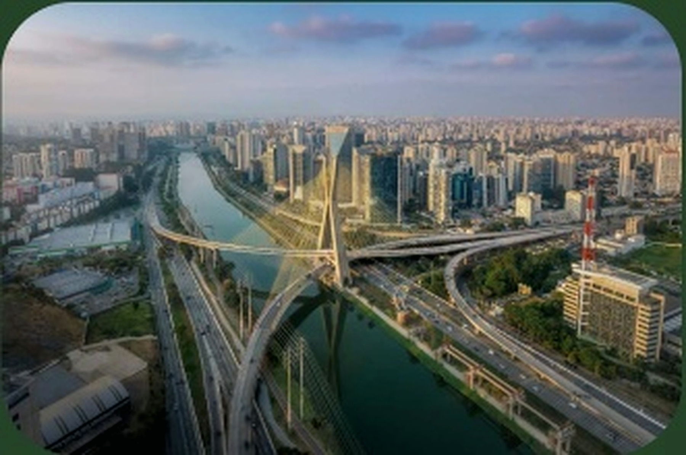
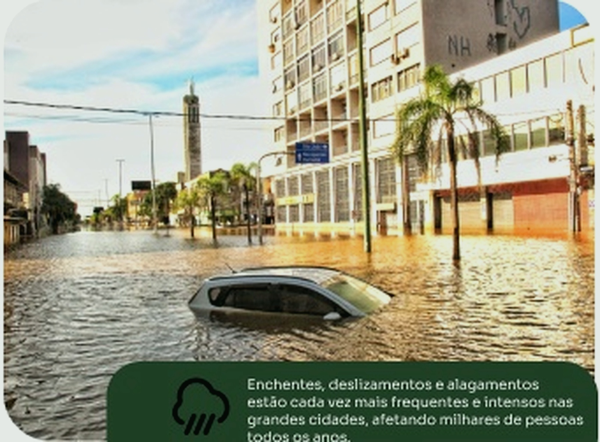

Participe
ParticipePoluição do ar
O aumento da frota de veículos e das indústrias eleva os níveis de poluentes e compromete a qualidade do ar.
Entenda como o crescimento das cidades afeta o
meio ambiente, a sociedade e a qualidade de vida.

O aumento da frota de veículos e das indústrias eleva os níveis de poluentes e compromete a qualidade do ar.
O crescimento urbano desordenado aumenta os congestionamentos e o tempo de deslocamentos nas cidades.
A ocupação irregular do solo causa falta de infraestrutura, habitação precária e expansão de áreas de risco.
O aumento da frota de veículos e das indústrias eleva os níveis de poluentes e compromete a qualidade do ar.
A urbanização acelerada e, muitas vezes,
desorganizada gera consequências profundas
e urgentes que afetam o presente e o futuro das
cidades.

Enchentes, deslizamentos e alagamentos
estão cada vez mais frequentes e intensos nas
grandes cidades, afetando milhares de pessoas
todos os anos.